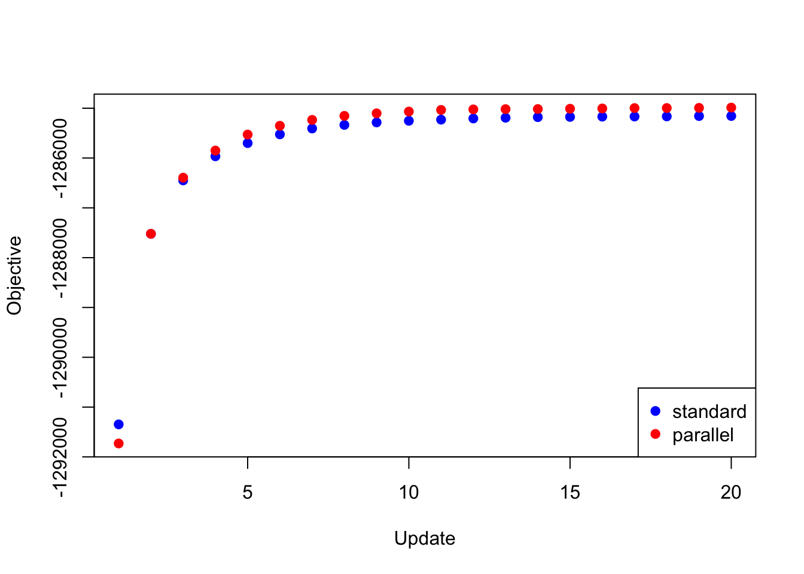
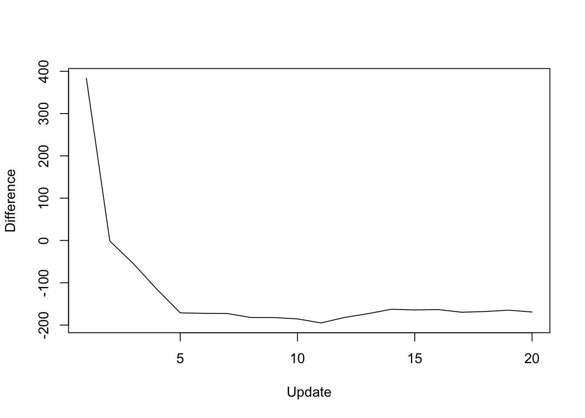
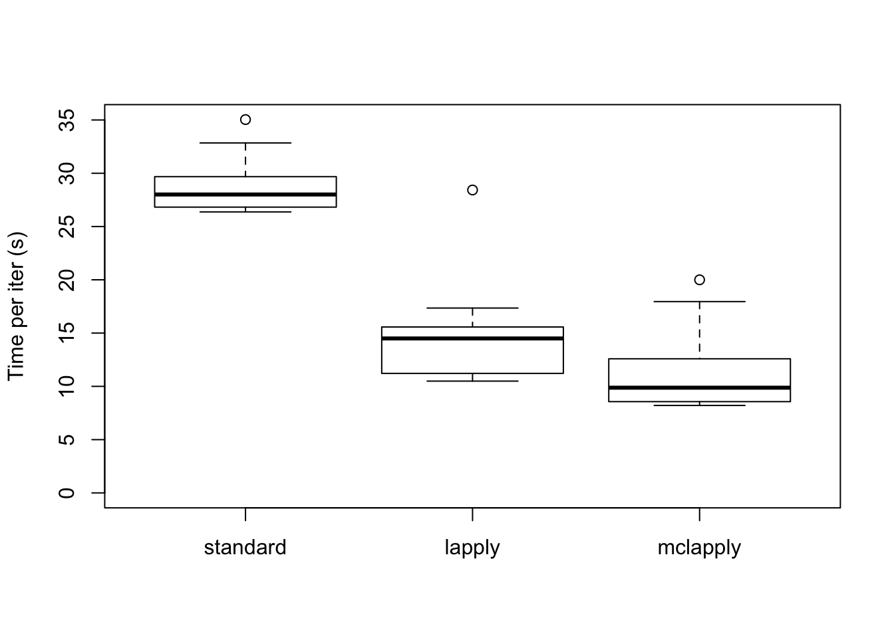
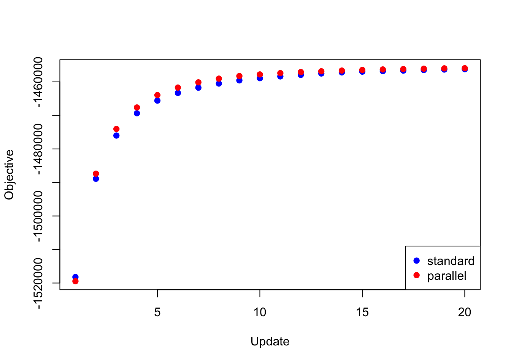
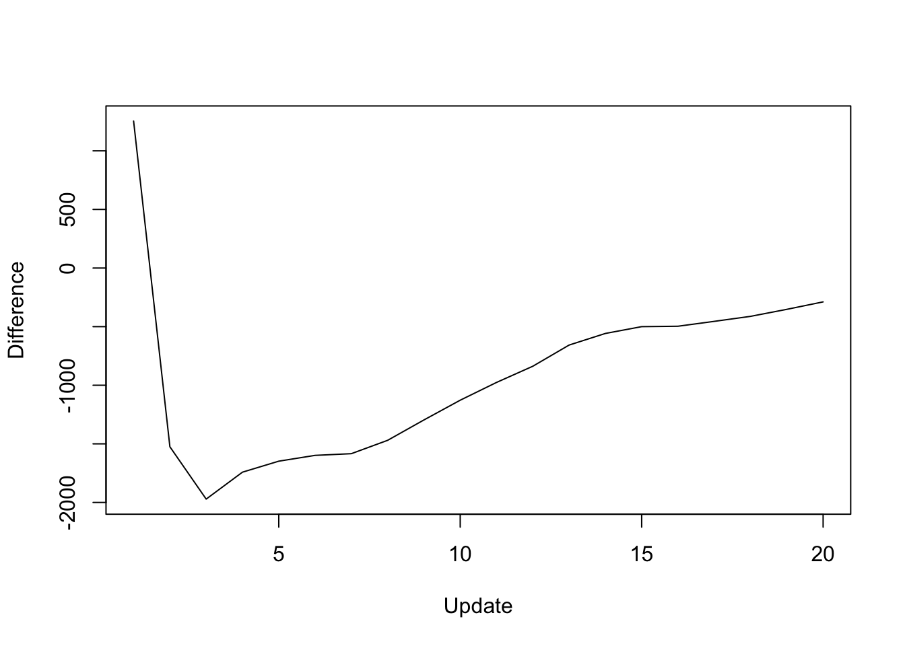
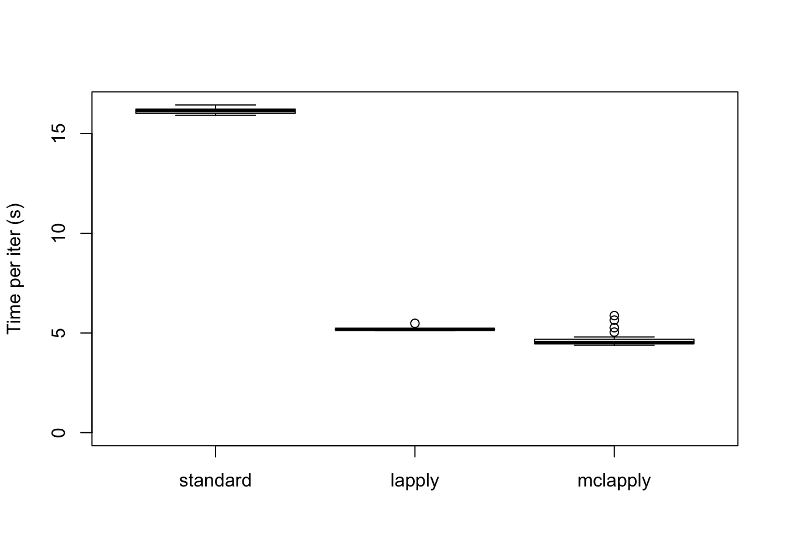

Last updated: 2018-08-16
workflowr checks: (Click a bullet for more information) ✔ R Markdown file: up-to-date
Great! Since the R Markdown file has been committed to the Git repository, you know the exact version of the code that produced these results.
✔ Environment: empty
Great job! The global environment was empty. Objects defined in the global environment can affect the analysis in your R Markdown file in unknown ways. For reproduciblity it’s best to always run the code in an empty environment.
✔ Seed:
set.seed(20180714)
The command set.seed(20180714) was run prior to running the code in the R Markdown file. Setting a seed ensures that any results that rely on randomness, e.g. subsampling or permutations, are reproducible.
✔ Session information: recorded
Great job! Recording the operating system, R version, and package versions is critical for reproducibility.
✔ Repository version: c972927
wflow_publish or wflow_git_commit). workflowr only checks the R Markdown file, but you know if there are other scripts or data files that it depends on. Below is the status of the Git repository when the results were generated:
Ignored files:
Ignored: .DS_Store
Ignored: .Rhistory
Ignored: .Rproj.user/
Ignored: docs/.DS_Store
Ignored: docs/figure/.DS_Store
Untracked files:
Untracked: code/parallel_accel.R
Untracked: code/track_gf.R
Untracked: data/greedy19.rds
To further explore the parallel updates implemented in the previous analysis, I attempt to parallelize the backfits performed in my MASH v FLASH GTEx analysis.
While flash_add_greedy and flash_add_factors_from_data both yield factor/loading pairs that are already relatively close to optimal, MASH v FLASH poses more difficult optimization problems in that its “canonical” loadings can be far from optimal, and the data-driven loadings obtained from the “strong” dataset do not necessarily fit the “random” dataset very well. Further, the full set of loadings forms an overcomplete basis for \(\mathbb{R}^{44}\), so that many of the loadings are, in a sense, redundant.
I use the three backfitting methods described in the previous analysis to perform the two backfits described here. The code used in this analysis is included in the previous analysis (see here).
The first attempt to parallelize the backfit was a disaster. The objective for the first five iterations was:
res_random_bad <- readRDS("./data/parallel/MASHvFLASHrandom_bad.rds")
knitr::kable(data.frame("Iteration" = 1:5, "Objective" = res_random_bad$parallel_obj))| Iteration | Objective |
|---|---|
| 1 | -1845538 |
| 2 | -3964293 |
| 3 | -19971902 |
| 4 | -138413167 |
| 5 | -1024826913 |
The problem, I think, is that since (as mentioned above) the loadings form an overcomplete basis, an update to the equal effects factor could also be achieved (roughly speaking) by updates to each of the unique effects factors. When all are updated simultaneously, the updates overshoot their goal, causing the objective to spiral out of control.
If this reasoning is correct, then better results might be obtained by splitting up the loadings into subsets of loadings that are mutually orthogonal (or nearly so), and then parallelizing the updates to the loadings within each subset. To test this hypothesis, I divided the loadings into an equal effects loading, 44 unique effects loadings (which are of course mutually orthogonal), two data-driven loadings that are distributed across several tissues (loadings 2 and 11 shown here), and the remaining 11 data-driven loadings (each of which is primarily loaded on two or three tissues).
To update the loadings, then, I updated the equal effects loading, then I updated the unique effects loadings in parallel, then I updated data-driven loadings 2 and 11, and finally I updated the remaining data-driven loadings in parallel. Surprisingly, I was able to achieve a better objective than I achieved using a serial backfit.
res_random <- readRDS("./data/parallel/MASHvFLASHrandom.rds")
all_obj <- c(res_random$backfit_obj, res_random$parallel_obj)
plot(res_random$backfit_obj, pch=19, col="blue",
xlim=c(1, 20), ylim=c(min(all_obj), max(all_obj)),
xlab="Update", ylab="Objective")
points(res_random$parallel_obj, pch=19, col="red")
legend("bottomright", legend=c("standard", "parallel"),
pch=c(19, 19), col=c("blue", "red"))
| Version | Author | Date |
|---|---|---|
| 312981f | Jason Willwerscheid | 2018-08-15 |
The difference in objective attained (that is, the serial objective minus the parallel objective) is as follows:
y <- res_random$backfit_obj - res_random$parallel_obj
plot(1:length(y), y, type="l", xlim=c(1, 20), ylim=c(min(y), max(y)),
xlab="Update", ylab="Difference")
| Version | Author | Date |
|---|---|---|
| 312981f | Jason Willwerscheid | 2018-08-15 |
As expected, the parallel updates are much faster (even after dividing the loadings into four subsets).
data <- data.frame(standard = res_random$backfit_t,
lapply = res_random$parallel_t,
mclapply = res_random$multicore_t)
boxplot(data, ylim=c(0, max(data)), ylab="Time per iter (s)")
| Version | Author | Date |
|---|---|---|
| 312981f | Jason Willwerscheid | 2018-08-15 |
The total time (in seconds) required for 20 backfitting iterations is:
colSums(data)standard lapply mclapply
573.111 286.869 222.333 The same trick is also needed to backfit the “strong” dataset using the same loadings as above and using the priors obtained by backfitting the “random” dataset. If I try to update the full set of loadings in parallel, then the objective again diverges to \(-\infty\). But if I do the parallel updates in four chunks (as described above), I obtain an objective that beats the serial method (after 20 iterations, at least):
res_final <- readRDS("./data/parallel/MASHvFLASHfinal.rds")
all_obj <- c(res_final$backfit_obj, res_final$parallel_obj)
plot(res_final$backfit_obj, pch=19, col="blue",
xlim=c(1, 20), ylim=c(min(all_obj), max(all_obj)),
xlab="Update", ylab="Objective")
points(res_final$parallel_obj, pch=19, col="red")
legend("bottomright", legend=c("standard", "parallel"),
pch=c(19, 19), col=c("blue", "red"))
| Version | Author | Date |
|---|---|---|
| 312981f | Jason Willwerscheid | 2018-08-15 |
The difference in objective attained is as follows:
y <- res_final$backfit_obj - res_final$parallel_obj
plot(1:length(y), y, type="l", xlim=c(1, 20), ylim=c(min(y), max(y)),
xlab="Update", ylab="Difference")
| Version | Author | Date |
|---|---|---|
| 312981f | Jason Willwerscheid | 2018-08-15 |
The difference in elapsed time is especially dramatic here. The parallel updates take less than a third of the time required by the serial updates:
data <- data.frame(standard = res_final$backfit_t,
lapply = res_final$parallel_t,
mclapply = res_final$multicore_t)
boxplot(data, ylim=c(0, max(data)), ylab="Time per iter (s)")
| Version | Author | Date |
|---|---|---|
| 312981f | Jason Willwerscheid | 2018-08-15 |
The total time (in seconds) required is:
colSums(data)standard lapply mclapply
322.891 103.770 93.890 sessionInfo()R version 3.4.3 (2017-11-30)
Platform: x86_64-apple-darwin15.6.0 (64-bit)
Running under: macOS High Sierra 10.13.6
Matrix products: default
BLAS: /Library/Frameworks/R.framework/Versions/3.4/Resources/lib/libRblas.0.dylib
LAPACK: /Library/Frameworks/R.framework/Versions/3.4/Resources/lib/libRlapack.dylib
locale:
[1] en_US.UTF-8/en_US.UTF-8/en_US.UTF-8/C/en_US.UTF-8/en_US.UTF-8
attached base packages:
[1] stats graphics grDevices utils datasets methods base
loaded via a namespace (and not attached):
[1] workflowr_1.0.1 Rcpp_0.12.17 digest_0.6.15
[4] rprojroot_1.3-2 R.methodsS3_1.7.1 backports_1.1.2
[7] git2r_0.21.0 magrittr_1.5 evaluate_0.10.1
[10] highr_0.6 stringi_1.1.6 whisker_0.3-2
[13] R.oo_1.21.0 R.utils_2.6.0 rmarkdown_1.8
[16] tools_3.4.3 stringr_1.3.0 yaml_2.1.17
[19] compiler_3.4.3 htmltools_0.3.6 knitr_1.20 This reproducible R Markdown analysis was created with workflowr 1.0.1